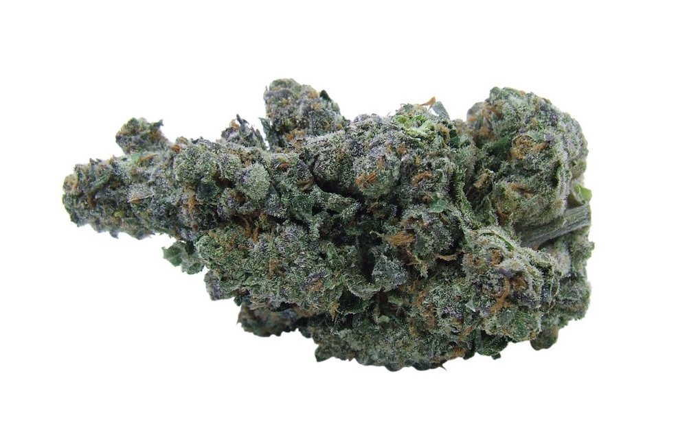

girl scout cookies
13.99 per gram
starstarstarstarstar_half
This classic strain is a sativa dominant hybrid, a cross between Durban Poison and OG Kush. Recommended for patients suffering from severe pain, nausea, or appetite loss. The strain consists of 60% indica and 40% sativa, with a THC content of up to 28%. It’s powerful, to say the least. It has a few different phenotypes including Thin Mint GSC (known for being highly psychoactive) and Platinum GSC (known for its physical and psychological relieving effects). Despite its high THC content, GSC is less than 1% cannabidiol (CBD) – one of the compounds in pot with medical benefits.